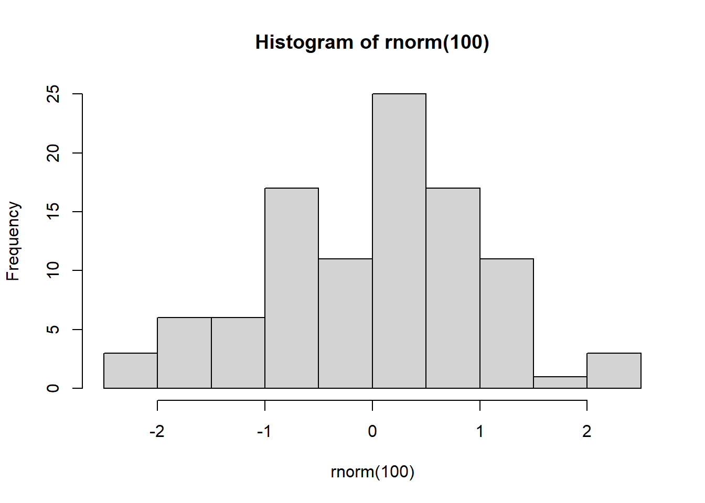
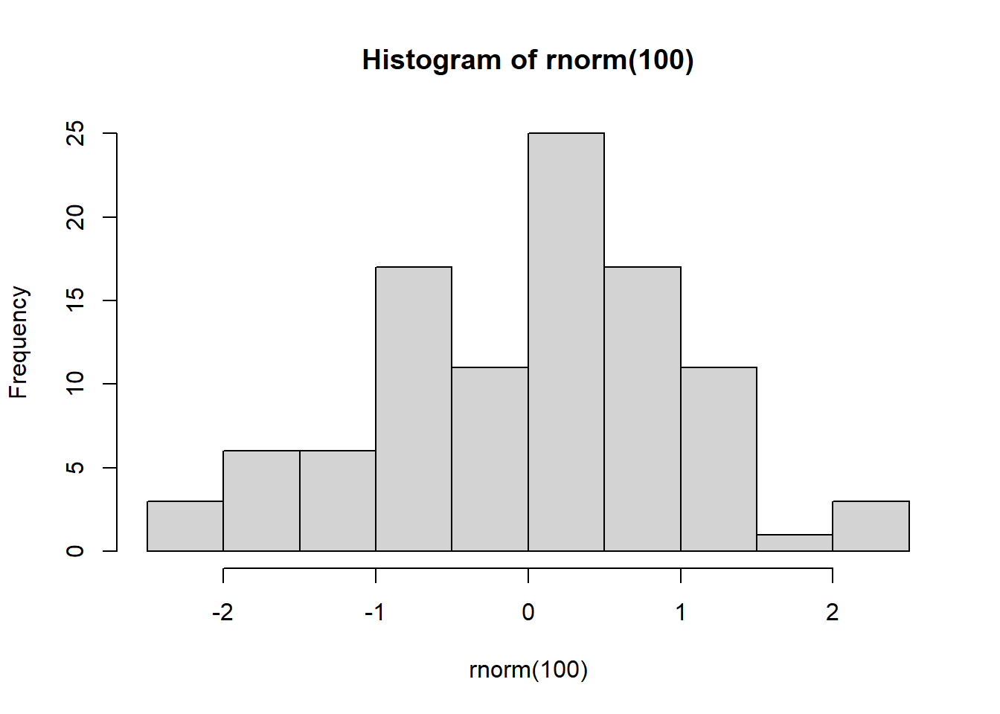

{kind=link}
```{r}
hist(rnorm(100))
```
https://tinyurl.com/QuartoBES
This tutorial is available as a webpage here: github./ If you don’t have R Studio installed or working, no problem! It’s also available as a positcloud instance: positcloud.
If you see this emoji 🎬 then it’s an instruction to do something.
Quarto is a modern scientific publishing system for dynamic, reproducible documents.
Typical write-up workflow:
With Quarto you don’t have to worry about any of these. It does the work for you!
To address the reproducibility crisis journals now increasingly want you to have your code/workbook submitted with the manuscript. Working in Quarto allows you have all of that all in one place, readily exportable to whichever format the journal requires.
Same .qmd, different output:
--- at the top of the document (more on this later)```{r} and ``` and chunk options, starting #|, determine how/whether they run whether code/output is included in the rendered document|#, # in code chunks, <!-- in text --> but use Ctrl+Shift+C| Markdown Syntax | Output |
|---|---|
|
italics, bold |
|
bold italics |
|
superscript2 |
|
subscript2 |
|
|
|
verbatim code |
| Markdown Syntax | Output |
|---|---|
|
Header 1 |
|
Header 2 |
|
Header 3 |
|
Header 4 |
| Markdown Syntax | Output |
|---|---|
|
Quarto |
|
! Caption |
Use $ delimiters for inline maths and $$ delimiters for display maths. For example:
| Markdown Syntax | Output |
|---|---|
|
inline maths: \(E=mc^{2}\) |
|
display maths: \[E = mc^{2}\] |
Let’s create a Quarto Document (a .qmd file) in RStudio!
🎬 Go to File > New File > New Quarto Document
🎬 Give your file a name
🎬 Choose Engine: Knitr
🎬 Turn off Visual Editor (for now! We’ll learn to use Source editor first)
🎬 Now hit Render (or Ctrl+Shift+K).
You’ll see the Rendered default document in the Viewer panel.
🎬 Tools > Global Options
- General:
- Turn off the three “Restore ….” options
- Turn “Save workspace to .RData on exit” to Never - R Markdown:
- Turn “Show output preview in:” to Viewer pane
As mentioned before, the YAML determines of the settings of the qmd document. It is defined between --- at the top of the document.
The default YAML header will look a bit like this:
---
title: "BES2025 Quarto"
author: "Santa Claus"
format: html
engine: knitr
---🎬 Feel free to edit this. Try making your own title and add yourself as the author.
Deafult code chunk options can also be determined in the YAML:
echo: false code will not be included in outputinclude: true output will be includederror: false halt render if a code error occursmessage: false messages and warnings will not be includedwarning: falseYAMLs can be saved as separate .YAML files and then pointed to by individual Quarto documents like so:
---
metadata-files:
- settings.yaml
---Useful if you want the same formatting for multiple documents!
🎬 Add the code chunk below (Ctrl-Shift-I) for a simple graph, and then hit Render (Ctrl-Shift-K)
```{r}
hist(rnorm(100))
```
Congratulations! You’ve created your first Quarto content!
Let’s try loading in an R package, in this case tidyverse (Wickham et al. 2019).
🎬 Add this code chunk for package loading:
```{r}
#| label: load-packages
library(tidyverse)
```── Attaching core tidyverse packages ──────────────────────── tidyverse 2.0.0 ──
✔ dplyr 1.1.4 ✔ readr 2.1.5
✔ forcats 1.0.0 ✔ stringr 1.5.1
✔ ggplot2 3.5.0 ✔ tibble 3.2.1
✔ lubridate 1.9.3 ✔ tidyr 1.3.1
✔ purrr 1.0.2
── Conflicts ────────────────────────────────────────── tidyverse_conflicts() ──
✖ dplyr::filter() masks stats::filter()
✖ dplyr::lag() masks stats::lag()
ℹ Use the conflicted package (<http://conflicted.r-lib.org/>) to force all conflicts to become errors#| label: load-packages is a code chunk label. These are useful (here) and essential (later) for cross-referencing.
We can run individual code chunks in the R editor. This is useful for troubleshooting R code without having to Render every time (which can be lengthy with larger documents or datasets).
Let’s now try loading in some real data.
🎬 Make a folder called data-raw
🎬 Save chaff.txt to data-raw 🎬 Add the following code chunk and run it:
```{r}
#| label: import-data
file <- "data-raw/chaff.txt"
chaff <- read_table(file)
```
── Column specification ────────────────────────────────────────────────────────
cols(
subspecies = col_character(),
mass = col_double()
)The data is loaded into R now. Let’s now add a code chunk to summarise the dataset.
🎬 Add this data summarisation chunk and run it
```{r}
#| label: data-summary
chaff_summary <- chaff |>
group_by(subspecies) |>
summarise(mean = mean(mass, na.rm = TRUE),
sd = sd(mass, na.rm = TRUE),
n = length(mass),
se = sd / sqrt(n))
```Our data is now summarised and ready to be reported in the text.
Usually results are “hard coded” into the text of a write-up, we manually type them in.
If the dataset changes we’d have to go back to every instance of that reporting and change them manually, which is laborious and error-prone (how often have you mis-remembered or mis-typed a number?)
We can instead use inline code to automatically place data (such as sample size, mean) into the text! Any code output can be placed as inline code.
Inline code goes between `r` and ` .
For example by writing:
The squareroot of 2 is `r sqrt(2) `
you will get:
The squareroot of 2 is 1.4142136
🎬 To summarise our data we can add this code chunk to define the variable n_coelebs:
```{r}
n_coelebs <- chaff_summary$n[chaff_summary$subspecies == "coelebs"]
```🎬 And then add that to the text as follows:
We sampled `r n_coelebs` *F. c. coelebs* males.
🎬 Then hit Render (Ctrl+Shift+K) and it will display as:
We sampled 20 F. c. coelebs males.
Now let’s try and insert a graph.
🎬 Add a code chunk to the Results section with:
```{r}
#| label: fig-chaff
#| fig-cap: "Mass of Chaffinches"
ggplot() +
geom_point(data = chaff, aes(x = subspecies, y = mass),
position = position_jitter(width = 0.1, height = 0),
colour = "gray50") +
geom_errorbar(data = chaff_summary,
aes(x = subspecies, ymin = mean - se, ymax = mean + se),
width = 0.3) +
geom_errorbar(data = chaff_summary,
aes(x = subspecies, ymin = mean, ymax = mean),
width = 0.2) +
scale_y_continuous(name = "Mass (g)",
limits = c(0, 30),
expand = c(0, 0)) +
scale_x_discrete(name = "Subspecies",
labels = c("Canariensis", "Coelebs")) +
theme_classic()
```🎬 Render (Ctrl+Shift+K)
Note how it is automatically labelled as Figure 1! Quarto will automatically number tables and figures for you.
Remember how we are labelling our code chunks?
The label of the code chunk is important when creating figures because it is used to cross reference the figure in the text. We give cross references with @ followed by the label of the code chunk.
That is starts with a fig- prefix also matters - this is what determines what is treated as a figure numbered in order of appearance.
🎬 If we add “See @fig-chaff” to our text and hit Render it’ll display as:
See Figure 1.
There are two ways to add a legend:
fig-cap chunk option: fig-cap: "Mass of chaffinches" to the code chunk.:::Divs are more flexible:
We won’t cover Divs in this workshop, but you can find out more here
Let’s now add a table to our document!
There are several ways to add tables to a document. We will use the knitr::kable() function to create a table from a data frame or the summary information
🎬 Add a table of the summary information for the chaffinch data:
```{r}
#| label: tbl-chaff
chaff_summary |>
knitr::kable(caption = "Summary of mass(g) for the two subspecies of chaffinch.", col.names = names(chaff_summary) |> str_to_sentence())
```| Subspecies | Mean | Sd | N | Se |
|---|---|---|---|---|
| canariensis | 22.275 | 2.150857 | 20 | 0.4809462 |
| coelebs | 20.480 | 2.137780 | 20 | 0.4780222 |
Just as the fig- prefix matters for corrected numbering of figures, the tbl- prefix is important for the corrected numbering of figures.
Just as the label of the code chunk is important for cross referencing of figures so it is for tables and we use @ followed by the label of the code chunk to cross reference the table in the text.
🎬 If we add “See @tbl-chaff” to our text and hit Render it’ll display as:
See Table 1.
There’s a lot of decimal places here that we can cut down. They can be set in two ways:
in the table by adding digits = 2 to the kable() function
For the document overall by adding this to the chunk:
```{r}
options(digits = 2)
```🎬 Let’s try the second option with this chunk:
```{r}
#| label: tbl-chaff2
options(digits = 2)
chaff_summary |>
knitr::kable(caption = "Summary of mass(g) for the two subspecies of chaffinch.", col.names = names(chaff_summary) |> str_to_sentence())
```| Subspecies | Mean | Sd | N | Se |
|---|---|---|---|---|
| canariensis | 22 | 2.1 | 20 | 0.48 |
| coelebs | 20 | 2.1 | 20 | 0.48 |
Note here we have two tables now, and the table numbering is automatic!
🎬 Cut the code chunk for the second table and Paste it above the first table. Render, and observe how the Tables are automatically renumbered!
Visual Editor button in the top right or by Ctrl-Shift-F4You can add citations for R and packages, from doi, from a .bib file, or from zotero.
🎬 Put your cursor where you want the citation to go and click the Insert button in the top right and select Citation (Ctrl-Shift-F8) and add a citation for the tidverse package.
🎬 Render
references.bib file has been created in the project folder🎬 Put your cursor where you want the citation to go and click the Insert button in the top right and select Citation (Ctrl-Shift-F8) Select From DOI and paste in 10.1016/j.ympev.2009.07.018
🎬 Render
You can also add citations to the .bib file manually.
Pages made with R (2024), Quarto (Allaire et al. 2022), knitr (Xie 2023), kableExtra (Zhu 2024)